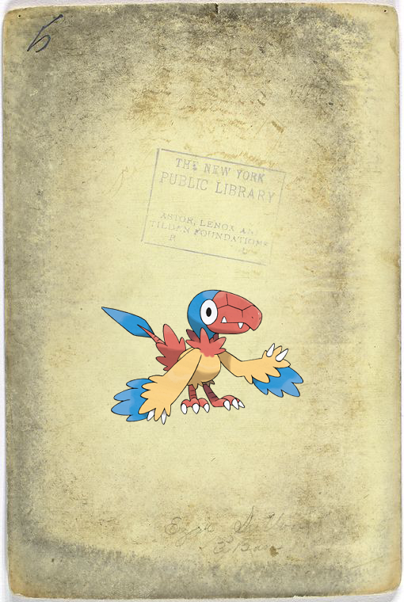
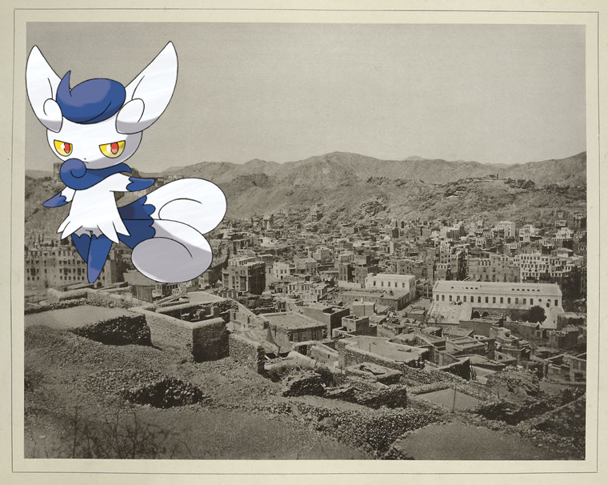
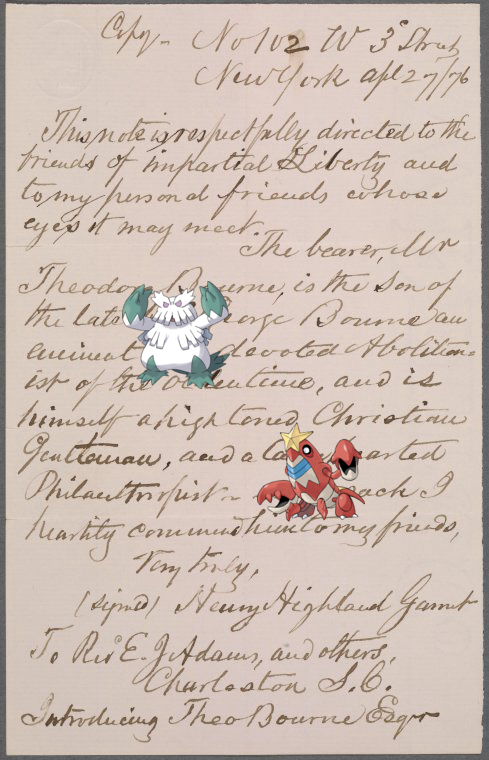

-
Archen ; Ezra Sutton, 3rd base!
-

-
Rampardos ; Floor planss of The Riverdale..
-
Aromatisse, Terrakion + Artillerie, 1710
-
Gorebyss – S. E. George Washington.
- 
-
Gallade ; Cliff House.
-
Crawdaunt, Abomasnow ; Garnet, Henry Highland!
-
Lickilicky @ Persépolis. Plan du palais no. 8 du plan général..
-
Slowbro – EM. 5776!
-
Slowking ; Text.
-
Vanillish – Italy. Modena, 1850-1859..
-
Garchomp ; Floor plans of The Brookfield.!
-
Garchomp, Electivire on The Spanish Netherlands.
-
Phanpy on Hotel Saskatchewan
-
 Teddiursa on Germany, Prussia, 1807-1835.
Teddiursa on Germany, Prussia, 1807-1835. -
 Heracross – Russia, 1828..
Heracross – Russia, 1828.. -
 Goodra on Episcopatus Bergensis.!
Goodra on Episcopatus Bergensis.! -

-
Corsola | My girl's a Hawaiian maiden
-
 Rattata | France, 1790-1801
Rattata | France, 1790-1801 -
Sableye on The Funeral of Chrysostum.